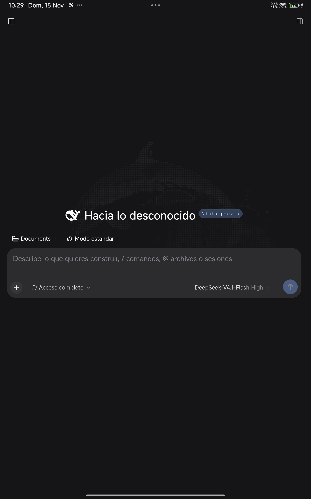
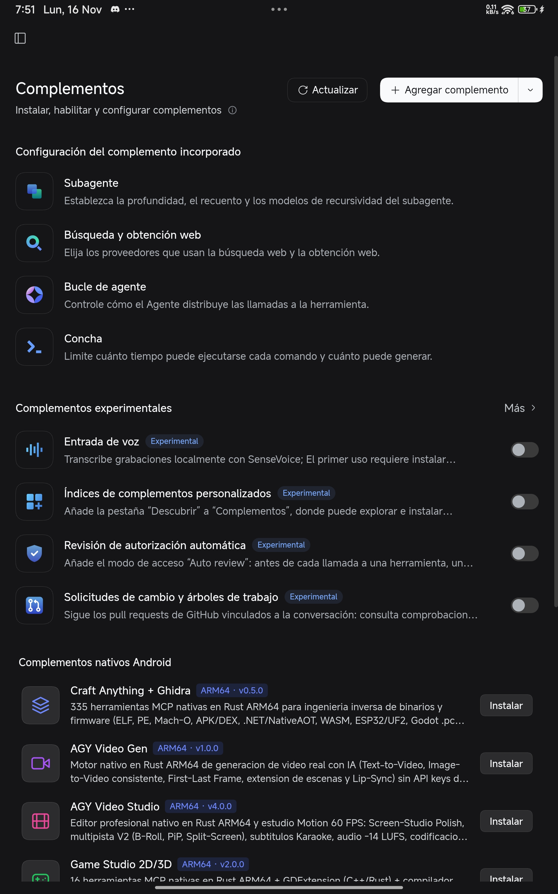
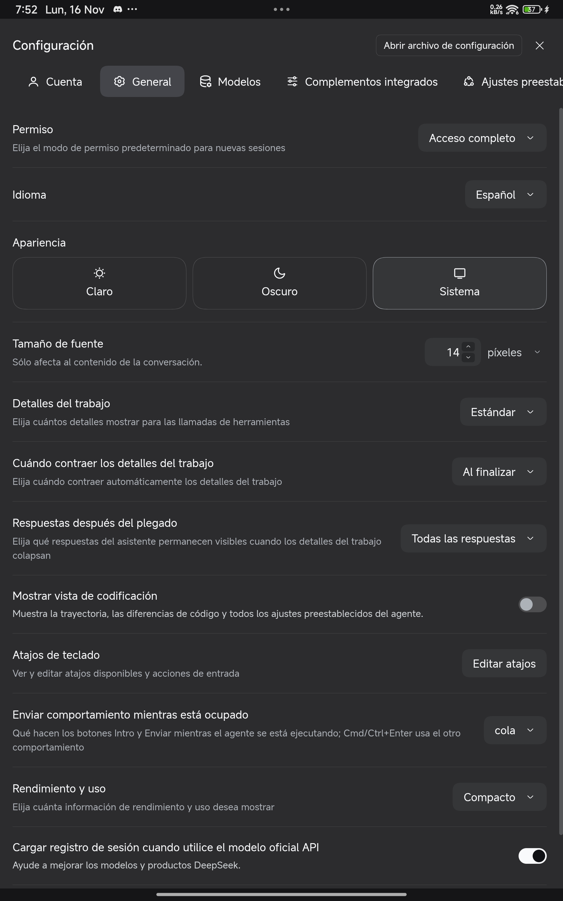
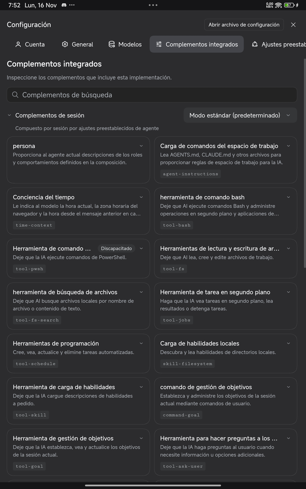
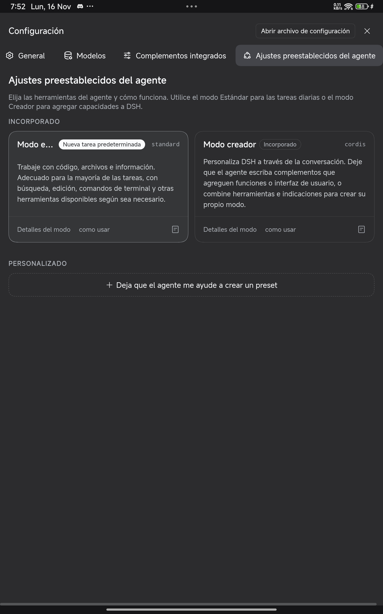

DeepSeek for Android
Standalone DeepSeek Harness Desktop (@deepseek-ai/dsh) autonomous coding IDE and native ARM64 Android APK (com.ds.ide). Combines a ~2.5s Rust + Zstandard mmap JNI bootstrap engine (libds_bootstrap.so), Node v24.22.3 LTS, ds-box v0.3.1, PKCE OAuth, offline SenseVoice speech input, and zero-restart Cordis HMR MCP plugins.

Desktop-identical DeepSeek Harness Desktop workspace running locally on 127.0.0.1:45187 inside Android ARM64.
Native Rust Zstandard bootstrap & desktop parity
Executes the authentic @deepseek-ai/dsh-web-app and Cordis plugin runtime locally on mobile silicon via Linux kernel execve() with 10-byte Bionic prefix alignment (com.ds.ide == com.termux).
| Subsystem | DeepSeek for Android (by Yhoanes) | PRoot / Remote Desktop Setups |
|---|---|---|
| Cold install bootstrap | Native Rust JNI libds_bootstrap.so: mmap ZIP_STORED .tar.zst + SHA-256 + 31-byte ELF fixups in ~2.5s (< 1 ms daily boot) |
30–90s shell tar extraction + slow userspace ptrace |
| Desktop feature parity | Multi-session threads, Standard & Creator (cordis) modes, subagents, Goal Mode, background jobs, diffs, PTY & Office/PDF skills |
Web chat only — no local filesystem, git worktrees, or PTY |
| Voice & OAuth | 1-click DeepSeek Account PKCE OAuth (deepseek://oauth-success) + offline sherpa-onnx SenseVoice STT |
Manual API key setup; no offline speech engine |
| Host security & IPC | 256-bit constant-time bridgeAuthToken, randomized bindings, 0% idle CPU inotify queues & 2.5s MIUI-safe rish watchdog |
Polling loops draining mobile battery |
| Plugin hot-mounting | 1-tap ARM64 Rust MCP servers hot-mounted into ~/.dsh/cordis.patch.yml via dsh-hmr with zero restart |
Unsupported on mobile |
Core engineering pillars
Built with a 12-phase Gradle-free deterministic pipeline (clang, rustc, zstd, aapt, javac, d8, apksigner) in a compact ~99 MB signed APK.
libds_bootstrap.so Rust JNI engine
Streams Zstandard decompression directly from memory-mapped APK offsets while rewriting 31-byte ELF interpreter/RPATH and shebang prefixes in RAM on first install.
Pure-Bionic Rust ds-box v0.3.1
Provides 4-thread parallel pkg (apt), autonomous ds-daemon background job scheduler, SIMD ds-fix-paths, and native Android ds-notify status alerts.
Standard & Creator (cordis) presets
Full access to DeepSeek Desktop's agent loops, auto-review mode, Git worktrees, custom OpenAI/Anthropic-compatible providers, and dynamic Light/Dark Android status-bar sync.
Zero-restart Cordis HMR & GitHub OTA
Toggle native ARM64 MCP servers live inside Plugins (Complementos) and receive RSA-4096 verified in-place APK upgrades from GitHub Releases without losing sessions.
Real device walkthrough
Captured directly on Android ARM64 hardware running com.ds.ide on loopback port 45187.
Authentic DeepSeek Harness Desktop (@deepseek-ai/dsh) running natively on Android ARM64.

1-tap Android Native ARM64 MCP Plugins hub hot-mounted via Cordis HMR.

Full desktop settings parity synced with Android system bars and dynamic launcher icons.

Built-in Cordis session tools, shell boundaries, and document processing skills.

Standard and Creator (Cordis) autonomous agent presets on mobile and tablet.
1-tap Cordis HMR native ARM64 plugins
Hot-mounted into ~/.dsh/cordis.patch.yml via dsh-hmr directly from Plugins → Android Native Plugins without restarting the server.
| Plugin | Version | Capabilities on Android ARM64 |
|---|---|---|
| Craft Anything + Ghidra | v0.5.0 |
335 native Rust MCP tools (< 50 MB RAM) for ELF/PE/Mach-O, APK/DEX, .NET/NativeAOT, WASM, ESP32/UF2, Godot .pck, Unity IL2CPP & Wii .dol + native ARM64 Ghidra 12.1.4 |
| AGY Video Gen & Video Studio | v1.0 / v4.0 |
Native Rust AI video generation (Text/Image-to-Video, First-Last Frame, Lip-Sync) + 60 FPS h264_mediacodec GPU studio & -14 LUFS mastering |
| Game Studio 2D/3D & Unity Studio | v2.0 / v1.0 |
16 Rust MCP tools + C++/Rust GDExtension + local signed Godot 4 .apk builder, plus 13 Rust tools + ported unity-cli v1.0.0 for Unity 6.3 LTS |
| AGY ADB Bridge | v1.0.1 |
Standalone Rust wireless ADB 6-digit pairing (127.0.0.1:5555 offline TCP mode — immune to MIUI/HyperOS sleep) + 2s Shizuku fallback |
| GitHub MCP, Chromium & Science | v2.1.1+ |
91 native ARM64 GitHub tools + headless ARM64 Chromium CDP automation + native ARM64 scientific stack (numpy, scipy, sympy, pandas) |
Frequently asked questions
Does DeepSeek for Android require Root, Termux, or PRoot?
No. It runs 100% natively in Android userspace inside its own standalone sandbox (com.ds.ide) with zero Termux dependency and zero PRoot overhead.
Do I need the external Shizuku app for elevated uid=2000(shell) ADB features?
No. Install the AGY ADB Bridge plugin directly inside DeepSeek, pair once with Android's 6-digit Wireless Debugging code, and enjoy persistent 127.0.0.1:5555 shell access even offline. External Shizuku is also supported automatically.
How do OTA updates work?
Official releases on GitHub Releases are signed with the dedicated DeepSeek Android production RSA-4096 certificate and install in-place without losing accounts, sessions, installed packages, or workspaces.